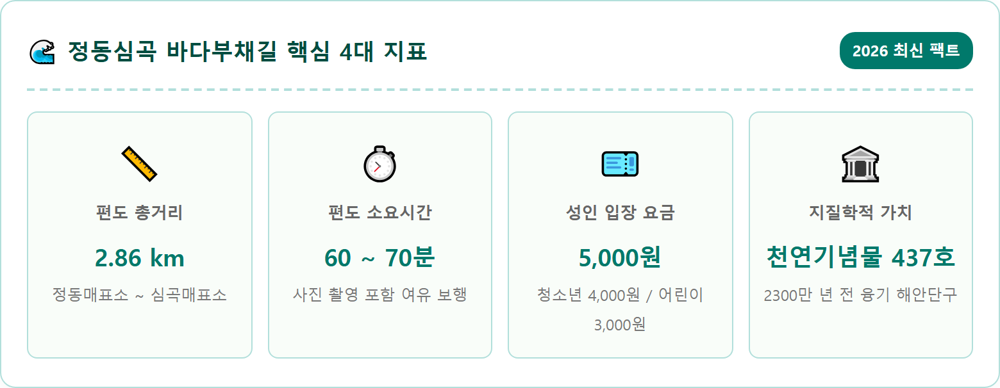
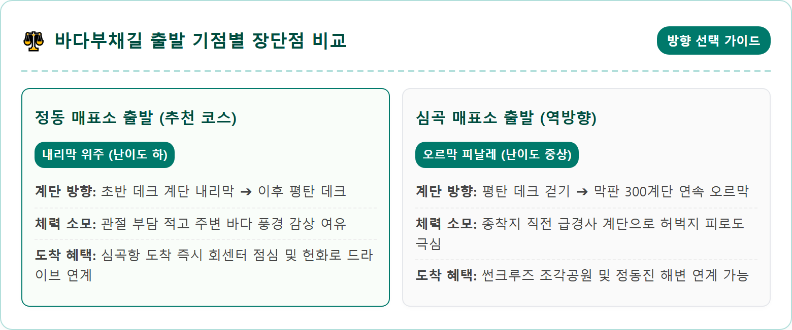
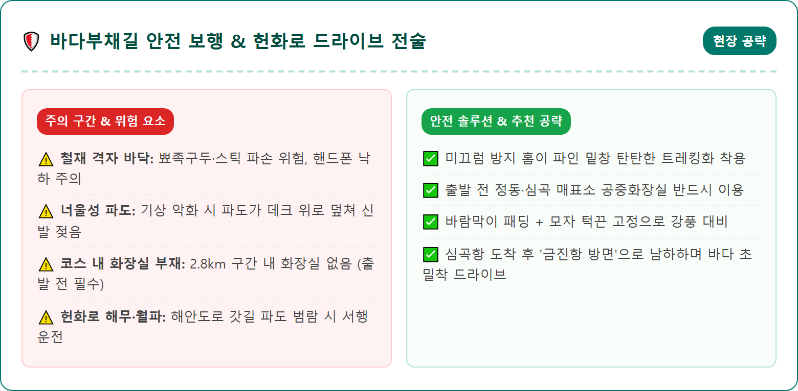
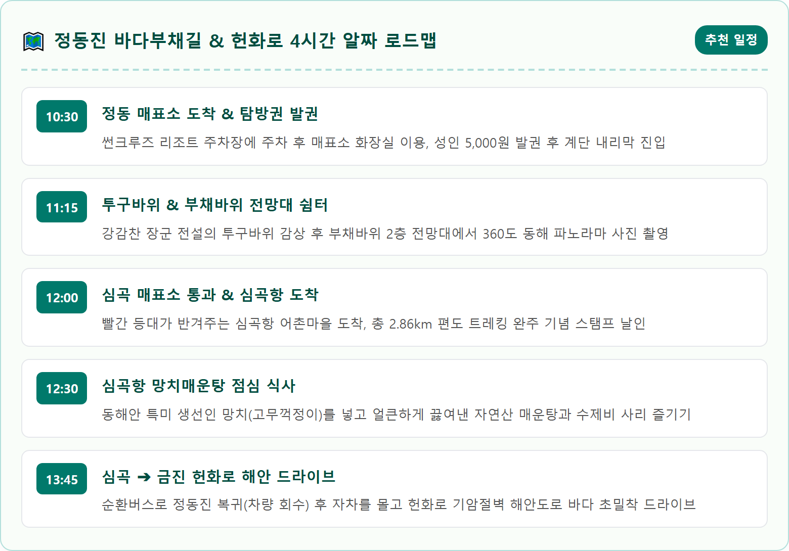
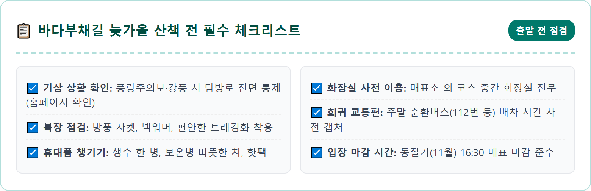
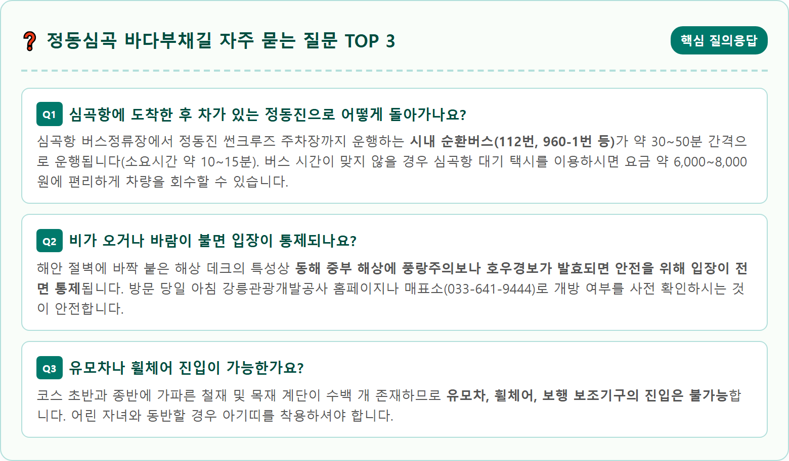

A dramatic, photorealistic coastal scenery of Jeongdong-Simgok Bada Buchaegil in Gangneung, South Korea during late autumn. A sturdy wooden and steel boardwalk walking trail hugging the sheer, rugged geological sea cliffs of the East Sea. Powerful deep navy-blue ocean waves crashing against jagged rocks and sea stacks, creating white sea foam sprays. Sun-drenched rocky terrace textures. A clear, crisp autumn sky with warm golden afternoon sunlight. Far in the distance, a small picturesque lighthouse and fishing harbor can be seen. High-end landscape photography, wide angle view, ultra-high resolution, vibrant natural colors, 1:1 aspect ratio.

강원특별자치도 강릉시 강동면 정동진리와 심곡리 사이에 위치한 '정동심곡 바다부채길'은 국내에서 유일하게 동해안 지각변동의 역사를 눈앞에서 마주할 수 있는 독보적인 해안 트레킹 코스입니다. 천연기념물 제437호로 지정된 '정동진 해안단구'는 약 2,300만 년 전 지반이 융기하면서 형성된 지형으로, 깎아지른 절벽과 계단 형태의 단구가 에메랄드빛 동해와 맞닿아 장엄한 비경을 뽐냅니다.
이곳은 1968년 무장공비 침투 사건 이후 군사 통제구역이자 해안 경비 작전지역으로 묶여 수십 년간 일반인의 출입이 엄격히 통제되었던 금단의 땅이었습니다. 그러다 군부대와의 긴밀한 협의를 거쳐 2017년 친환경 목재 및 철재 데크로 탐방로가 개설되면서 비로소 세상에 모습을 드러냈습니다.
사람의 손길이 닿지 않았던 오랜 세월 덕분에 해안 침식 절벽과 기암괴석이 원형 그대로 보존되어 있으며, 바다 쪽으로 부채를 활짝 펼쳐놓은 듯한 모양새를 닮았다 하여 '바다부채길'이라는 아름다운 이름이 붙었습니다. 늦가을 파도가 부서지는 소리를 배경 삼아 웅장한 기암절벽을 끼고 걷는 여정은 숨 막히는 감동을 선사합니다.
바다부채길은 편도 2.86km의 코스로 양방향 통행이 가능합니다. 북쪽의 '정동 매표소(썬크루즈 리조트 주차장 인근)'와 남쪽의 '심곡 매표소(심곡항)' 중 어느 쪽에서 출발하느냐에 따라 체력 소모와 관람 피로도가 크게 달라지므로 동선 선택이 매우 중요합니다.
결론부터 말씀드리면, 무릎 관절이 약하거나 어르신, 어린이를 동반한 가족 여행객에게는 **'정동 매표소 출발 ➔ 심곡 매표소 도착'** 코스를 강력히 추천합니다. 정동 매표소는 해발 고도가 높은 언덕배기에 위치해 있어 초반에 지그재그 나무 계단을 따라 바닷가로 내려간 뒤, 이후 대부분의 코스를 완만한 평지 데크로 걸을 수 있기 때문입니다.
반대로 심곡 매표소에서 출발하여 정동진으로 향하게 되면, 탐방로 막바지에 약 300여 개의 가파른 계단을 10분 이상 연속으로 걸어 올라가야 하므로 상당한 허벅지 근력과 숨가쁨을 감수해야 합니다. 따라서 내려가는 코스로 수월하게 걷고, 심곡항에 도착하여 맛있는 해산물 식사를 즐긴 뒤 순환버스로 복귀하는 것이 가장 이상적인 정석 코스입니다.

정동심곡 바다부채길을 걷는 동안 눈길을 사로잡는 수많은 기암괴석 중에서도 단연 압권은 '투구바위'와 '부채바위'입니다. 정동 매표소에서 출발해 약 1km 정도 걸어가면 바다 쪽으로 우뚝 솟은 투구바위가 웅장한 위용을 드러냅니다.
투구바위는 고려 시대 명장 강감찬 장군이 강릉에 출몰하던 발가락이 여섯 개 달린 육발호랑이를 물리치기 위해 투구를 쓰고 서 있는 형상을 닮았다고 전해지는 바위입니다. 실제로 바위 윗부분이 고대 장수의 철모 투구를 얹어놓은 듯 각이 져 있으며, 바위 틈새를 거세게 파고드는 파도가 하얀 물보라를 일으킬 때면 신비로운 전설의 기운이 더욱 생생하게 느껴집니다.
코스 중반부에 자리한 부채바위는 널따란 바위 면이 바다를 향해 활짝 펼쳐진 부채살 형상을 띠고 있습니다. 부채바위 상단에는 사방 360도로 푸른 동해를 조망할 수 있는 2층 목조 전망 데크가 설치되어 있습니다. 이곳에 올라서면 정동진 바다에서부터 심곡항에 이르는 해안선이 시원하게 한눈에 들어오며, 거센 해풍을 맞으며 바다 한가운데 떠 있는 듯한 짜릿한 해방감을 맛볼 수 있습니다.

바다부채길의 산책로는 단순한 목재 데크로만 이어져 있지 않습니다. 파도의 충격을 완화하고 바닷물이 자연스럽게 빠져나가도록 설계된 스틸 그레이팅(철재 격자판) 구간이 곳곳에 배치되어 있어 독특한 스릴을 선사합니다.
발밑을 내려다보면 발바닥 바로 아래로 시퍼런 동해 바닷물이 넘실거리고, 바위에 부딪힌 파도가 하얗게 부서지며 솟구쳐 오르는 모습이 그대로 투시됩니다. 마치 거친 바다 위를 허공에서 걷는 듯한 아찔한 청량감을 느낄 수 있습니다. 바다 안쪽에는 검푸른 다시마와 미역 군락, 맑은 바닷속을 헤엄치는 물고기 떼까지 육안으로 선명하게 관찰됩니다.
다만, 철재 격자판은 구멍이 숭숭 뚫려 있으므로 스마트폰이나 차 키, 동전 등을 떨어뜨리지 않도록 각별히 유의하셔야 합니다. 하이힐이나 슬리퍼는 발목 부상의 위험이 매우 크므로 절대 착용이 불가하며, 편안한 운동화나 등산화를 착용하셔야 미끄러짐 없이 안전하게 해상 트레킹을 즐길 수 있습니다.

바다부채길의 종착점인 심곡항에 도착했다면, 절대로 곧장 고속도로로 빠져나가지 마시고 남쪽 금진항으로 이어지는 '헌화로' 드라이브를 반드시 경험하셔야 합니다. 신라 향가 '헌화가'에서 이름을 따온 이 해안도로는 바다를 메워 만든 도로로, 방파제 가드레일 바로 너머로 파도가 철썩이는 대한민국 최고의 드라이브 코스입니다.
차량 창문을 내리면 짭조름한 바다 내음과 함께 부서지는 파도 물보라가 피부에 와닿을 정도로 바다와 도로의 거리가 가깝습니다. 도로 한쪽은 수직으로 솟아오른 웅장한 기암절벽이 웅장하게 서 있고, 다른 한쪽은 끝없이 펼쳐진 동해 수평선이 맞닿아 있어 달리는 내내 감탄사가 절로 터져 나옵니다.
길이 약 2km의 짧은 구간이지만, 굴곡진 해안선을 따라 천천히 서행하며 감상하는 바다 풍경은 외국 유명 해안도로 부럽지 않은 낭만을 선사합니다. 중간중간 마련된 소형 간이 주차장에 차를 대고 거대한 바위에 부딪혀 부서지는 파도를 멍하니 바라보는 '물멍' 코스로도 최고의 명당입니다.

편도 1시간 남짓 차가운 동해 바닷바람을 맞으며 걸어온 후 심곡항에 도착하면, 얼어붙은 몸과 허기진 배를 단숨에 녹여줄 특별한 로컬 음식이 기다립니다. 바로 동해안 어부들이 갓 잡아 올린 못생긴 생선 '망치'로 끓여내는 '망치매운탕'입니다.
표준어로 '고무꺽정이'라 불리는 망치는 겉모습이 아귀처럼 투박하고 못생겼지만, 뽀얗고 탄력 넘치는 흰 살 생선으로 국물을 끓였을 때 우러나오는 감칠맛과 시원함은 우럭이나 대구를 훌쩍 뛰어넘습니다.
심곡항 포구 주변의 오래된 식당들에서는 싱싱한 망치 토막에 대파, 무, 미나리를 듬뿍 넣고 얼큰한 고추장 육수에 쫄깃한 손수제비를 뚝뚝 떼어 넣어 끓여냅니다. 보글보글 끓는 국물을 한 숟가락 입에 넣는 순간, 칼칼하면서도 깊은 바다의 단맛이 온몸으로 퍼져 나갑니다. 부드러운 생선 살을 발라먹고 칼칼한 국물에 밥 한 공기를 말아 먹으면 늦가을 트레킹의 피로가 눈 녹듯 사라집니다.

바다부채길 트레킹을 마치고 차량을 회수한 뒤에는 정동진의 상징적인 명소들을 함께 둘러보며 하루 일정을 더욱 풍성하게 마무리할 수 있습니다.
정동 매표소 바로 옆에 위치한 '썬크루즈 리조트 조각공원'은 산꼭대기에 얹혀 있는 거대한 호화 유람선 건축물과 함께 푸른 바다를 내려다보는 천국의 계단 포토존, '축복의 손' 조형물이 유명합니다. 탁 트인 절벽 전망대에서 내려다보는 동해안 수평선은 속이 뻥 뚫리는 개방감을 안겨줍니다.
차를 타고 5분 거리인 '정동진 모래시계공원'으로 내려오면 지름 8m, 무게 40톤에 달하는 세계 최대 규모의 모래시계가 우뚝 서 있습니다. 모래가 다 떨어지는 데 정확히 1년이 걸리는 이 모래시계 앞을 거닐며 지나온 한 해를 되돌아보는 사색의 시간을 가질 수 있습니다. 폐기차를 개조하여 조성한 '정동진 시간박물관'과 기찻길 바로 옆에 파도가 치는 정동진역 플랫폼을 배경으로 감성 가득한 철도 여행 사진을 남겨보세요.
11월 중순의 강원도 동해안은 맑고 쾌청한 날이 많지만, 바다에서 불어오는 해풍은 뼛속까지 시릴 정도로 매섭습니다. 특히 기암절벽 사이를 통과할 때 형성되는 골바람은 순간 돌풍을 일으키기도 합니다.
따라서 체온을 유지하기 위해 얇은 옷을 여러 겹 겹쳐 입고, 겉에는 방풍과 생활 방수 기능이 있는 후드 윈드브레이커나 경량 패딩을 착용하시는 것이 이상적입니다. 바람에 모자가 날아가지 않도록 끈이 달린 모자나 비니를 착용하시고, 넥워머나 목도리를 두르면 체감 온도를 3도 이상 높일 수 있습니다.
또한, 파도가 높은 날에는 철재 격자판 틈으로 바닷물 분무가 흩날릴 수 있으므로, 방수 기능이 있는 아웃도어 신발을 신는 것이 좋습니다. 햇볕이 바다 수면에 반사되어 눈이 부실 수 있으니 자외선 차단 선글라스를 챙기시는 것도 쾌적한 보행에 큰 도움이 됩니다.
정동심곡 바다부채길의 동절기(11월~3월) 운영 시간은 오전 9시부터 오후 4시 30분까지이며, 매표 및 입장 마감은 오후 3시 30분입니다. 해가 일찍 지는 계절인 만큼 늦어도 오후 2시 30분 이전에는 매표를 마치고 코스에 진입하셔야 여유 있게 일몰 전 완주할 수 있습니다.
입장료는 일반 성인 5,000원, 중고등학생 4,000원, 초등학생 3,000원이며, 만 65세 이상 어르신과 미취학 아동은 무료입장이 적용됩니다(신분증 지참 필수).
주차의 경우 정동 매표소 방면은 '정동진 썬크루즈 주차장'을 이용하시면 되며(평일 무료, 주말 5,000원 선 / 부채길 영수증 제시 시 할인 적용), 심곡 매표소 방면은 '심곡항 공영 주차장'을 전액 무료로 이용하실 수 있습니다. 대중교통을 이용하실 경우 KTX 강릉역에서 누리로 열차나 시내버스를 타고 정동진역으로 이동한 뒤, 112번 버스로 환승하시면 매표소 입구까지 편리하게 닿을 수 있습니다.
| 항목 | 상세 정보 | 주의사항 및 팁 |
|---|---|---|
| 위치 | 강원특별자치도 강릉시 강동면 심곡리 114-3 (심곡 매표소) | 정동진 썬크루즈 리조트 진입로 (정동 매표소) |
| 운영 시간 | 동절기(11월~3월) 09:00 ~ 16:30 | 매표 마감 15:30 (기상 악화 시 휴무) |
| 이용 요금 | 성인 5,000원 / 청소년 4,000원 / 어린이 3,000원 | 만 65세 이상 무료 (신분증 필수 지참) |
| 코스 길이 | 편도 2.86km (도보 약 60분~70분) | 편도 트레킹 후 시내버스·택시로 차량 회수 |
| 주차 정보 | 심곡항 공영주차장(무료), 썬크루즈 주차장(유료) | 주말 혼잡 시 심곡항 주차 후 버스 이동 권장 |